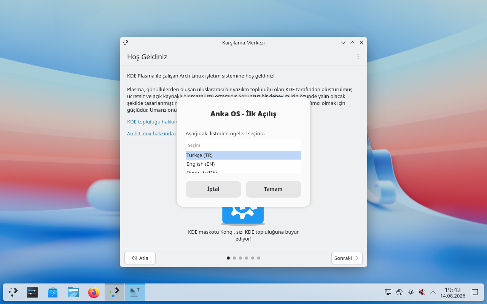
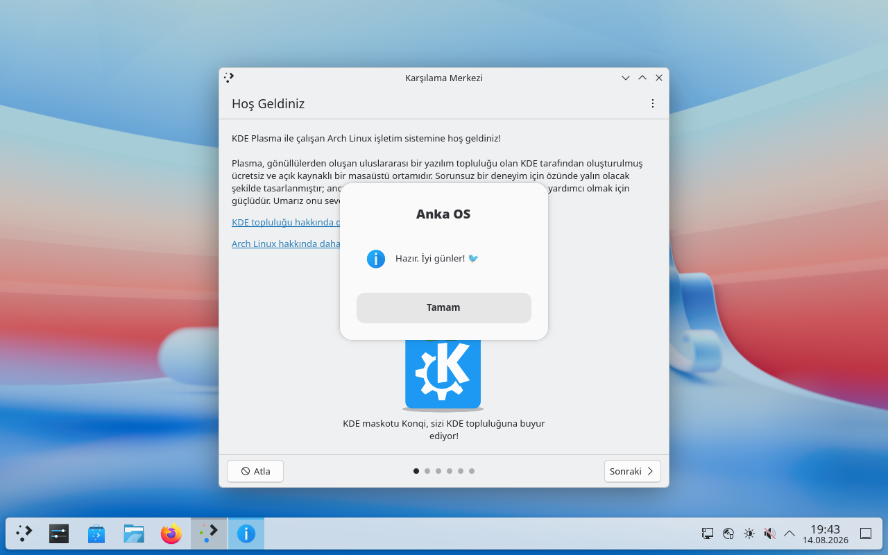

KDE Plasma 6
Wayland ile modern, akıcı ve özelleştirilebilir KDE Plasma 6.7 masaüstü.
Tek başına çalışan, hıza ve mahremiyete saygılı modern bir masaüstü.
Wayland ile modern, akıcı ve özelleştirilebilir KDE Plasma 6.7 masaüstü.
Hafif ISO ve optimize ayarlar sayesinde saniyeler içinde masaüstünde.
LUKS2 disk şifreleme, güvenli kit ve otomatik güvenlik duvarı.
Firefox, VLC, GIMP, LibreOffice + medya ve ofis araçları.
Gruplanan, önceliklendirilen şık bildirim merkezi.
Tek tıkla anlık görüntü; her zaman geri dönülebilir sistem.
Hiçbir veri toplanmaz, hiçbir istek gönderilmez. Mahremiyet varsayılan.
Linux 7.1.8 — en yeni donanım desteği ve güvenlik yamaları.
Canlı ISO'dan doğrulanmış gerçek masaüstü ekran görüntüleri.


v1.0 ISO dosyası (x86_64) — USB'ye yaz veya QEMU'da dene.
a1038b14… (üzerine gel: kopyala)
ISO'yu balenaEtcher veya dd ile USB belleğe yazdır.
sudo dd if=anka-os-2026.08-x86_64.iso of=/dev/sdX bs=4M status=progressUSB'den boot et, istersen önce QEMU'da dene.
qemu-system-x86_64 -enable-kvm -cdrom anka-os-2026.08-x86_64.iso -m 4096Adım adım kurulum sihirbazını takip et — otomatik bölümleme veya LUKS2 şifreleme ile.
Anka-OS v1.0 paket sürümleri ve sistem gereksinimleri.
Anka-OS'in planlanan geliştirme yol haritası.
Plasma 6.7.4, sıfır telemetri, Türkçe deneyim. Ağustos 2026.
LUKS şifreleme boot düzeltmesi, sudo desteği. 13 Eylül 2026.
Entegre grafik paket yöneticisi ve güncelleme merkezi.
ARM64 mimari desteği ile daha geniş donanım yelpazesi.
Güvenlik, performans ve kendi araçlarımız — tek güncellemede.
Şifreli kurulumda boot düzeltmesi — sistem açılışında LUKS şifresini soruyor, siyah ekran yok.
Root girişi ve şifreli kimlik doğrulama kapalı; yalnızca anahtar tabanlı erişim.
Kullanıcılar artık sudo kullanabiliyor; %wheel grubu şifresiz yetkilendirildi.
ufw + firewalld kurulu, fail2ban brute-force koruması aktif — ilk açılıştan itibaren.
Tek komutla oyun profili: giriş gecikmesi azaltma, ağ jitter düşürme, akıcı FPS.
anka-core, anka-cli, anka-probe, anka-mirrors ve daha fazlası — aşağıda detaylar.
Anka-OS'a özel, yerleşik komut satırı ve sistem araçları.
Arka planda çalışan sistem çekirdeği; durum, güvenlik ve sistem bilgilerini JSON-RPC üzerinden sunar.
Sistem durumunu sorgula: anka-cli system.status, anka-cli plugins.list ve daha fazlası.
Donanım ve sistem teşhisi: uptime, yük, bellek kullanımı, disk alanı — anlık JSON rapor.
Oyun performans profili: --list / --apply / --revert / --game modlarıyla geri alınabilir tuning.
reflector tabanlı en hızlı ayna seçimi: anka-mirrors -c TR -m 10 ile Türkiye öncelikli indirme hızı.
Saat dilimine göre otomatik açık/koyu tema geçişi — gözlerin her zaman rahat.
Anka'ya özel duvar kâğıtları arasında otomatik geçiş — masaüstü hep canlı.
İlk açılış sihirbazı: dil seçimi (TR/EN/DE), kişiselleştirme ve hoş geldin ekranı.
Hızlı sistem özeti; terminalde dağıtım bilgilerini gösteren neofetch benzeri araç.
Öne çıkan özellikleriyle neden Anka-OS seçmeli?
Arch Linux tabanlı, KDE Plasma masaüstü ortamı taşıyan bağımsız, Türkçe Linux dağıtımı.
GitHub üzerindeki açık kaynak depoya issue açabilir, kod yazabilir veya paket önerebilirsiniz.
Güvenlik: LUKS2 şifreleme aktif, sudo desteği, güvenli SSH varsayılanları. Performans: anka-tune oyun profili ve sysctl optimizasyonu. Araçlar: anka-core, anka-cli, anka-probe, anka-mirrors ve daha fazlası. Resmî yayın: 13 Eylül 2026.
Evet — kurulum sihirbazında otomatik bölümleme "yan yana" seçeneğini destekler.
4 GB RAM, 20 GB disk ve 64-bit işlemci önerilir. 2 GB RAM ile canlı deneme yapabilirsiniz.
Evet. v1.1'den itibaren şifreli kurulum tam destekleniyor; sistem açılışında LUKS şifresini soruyor.
Anka-OS'u indir, güvenli ve hızlı masaüstüne ilk adımını at. Açık kaynak projeye katkıda bulunmak ister misin?